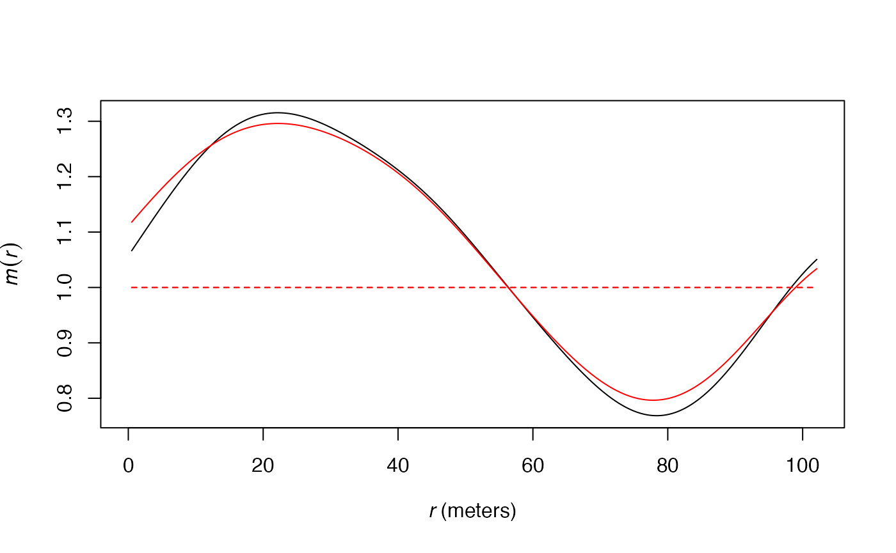
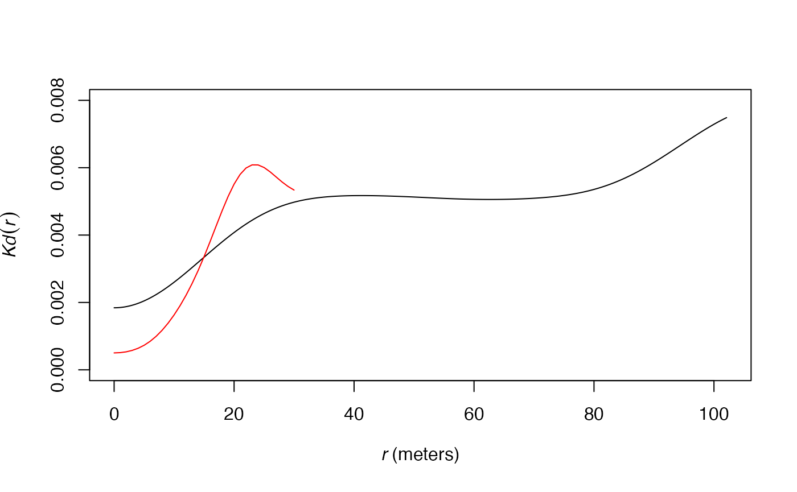
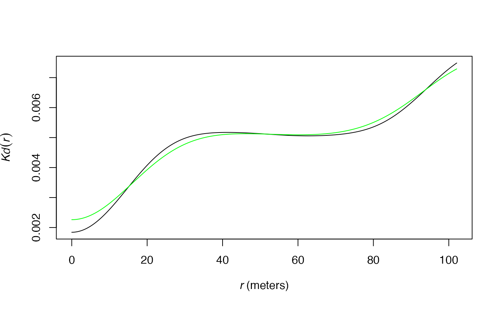
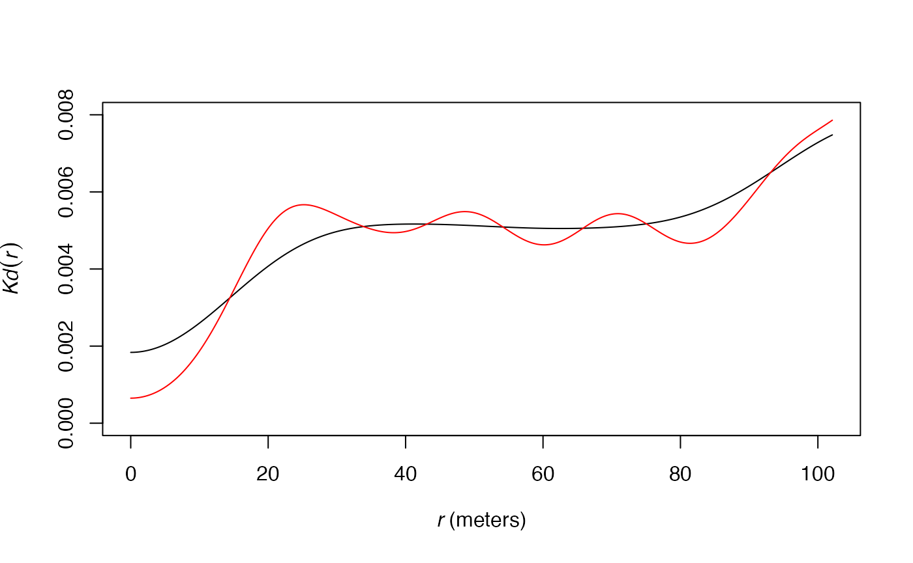

Estimation of the density of neighbors
The \(K_d\) function (Duranton and Overman 2005) is the probability density to find a neighbor a given distance apart from a point of interest in a finite point process. The \(K^{emp}\) function integrates the weights of points: it is the density probability to find an employee \(r\) apart from an employee of interest. The \(m\) function (Lang, Marcon, and Puech 2014) is the ratio of neighbors of interest at distance \(r\) normalized by its value over the whole domain.
All those functions require smoothing the observed data: the probability to find a neighbor exactly \(r\) apart from an arbitrary point is zero so neighbors around \(r\) apart are considered. The density function is used for that purpose. It applies kernel density estimation. In \(dbmss\), Gaussian kernels are used following Duranton and Overman (2005). Actually, the important choice in kernel density estimation is not the type of kernel but the bandwidth.
The bandwidth defines how close to \(r\) the distance between two points must be to influence the estimation of the density at \(r\). A small bandwidth only considers the closest values so the estimation is close to the data. A large bandwidth considers more points and gives a smoother estimation.
Available algorithms
Duranton and Overman (2005), in the original paper introducing the \(K_d\) function, used the optimal bandwidth according to Silverman (1986), i.e. the argument bw = "nrd0" of function density. This is the default choice in the functions of \(dbmss\), i.e. the argument Original = TRUE in Kdhat, mhat and similar functions.
A better choice may be Original = FALSE to apply the estimation of Sheather and Jones (1991), i.e. the argument bw = "SJ" of function density, which has better theoretical support. The result is usually less smoothed.
The following figure shows this difference on the estimation of the \(m\) function applied to the paracou16 point set: the red curve is for the original estimation, the black one uses the Sheather and Jones bandwidth.
## Loading required package: Rcpp## Loading required package: spatstat.core## Loading required package: spatstat.data## Loading required package: spatstat.geom## spatstat.geom 2.3-2## Loading required package: spatstat.random## spatstat.random 2.1-0## Loading required package: nlme## Loading required package: rpart## spatstat.core 2.4-0
# Sheather and Jones bandwidth in black
plot(mhat(paracou16, , ReferenceType="Q. Rosea", Original=FALSE), main="", legend=FALSE)
# Original bandwith in red
plot(mhat(paracou16, , ReferenceType="Q. Rosea"), col="red", main="", add=TRUE)
Data
The data used by those algorithms is the set of distances between pairs of points. In \(dbmss\), only pairs of points less than twice the maximum value of \(r\) are considered: very distant pairs of points are of little interest to estimate functions based on the number of neighbors of points. With the default arguments, almost all point pairs are included, except for the most distant ones, i.e. more than two thirds of the window’s diameter apart. If the user wants to focus on small distances, i.e. choose \(r\) much less than the default value, then the most distant point pairs (more than twice the max value of \(r\)) will be ignored, resulting in a smaller bandwidth and consequently a more acute (less smoothed) estimation of the functions. The following figure shows this effect on the estimation of the \(K_d\) function applied to the paracou16 point set. The default distance range is used for the black curve. The red curve is the same function estimated up to 30 meters only, resulting into a narrower bandwith: the curve of \(K_d\) is less smoothed.
plot(Kdhat(paracou16, , ReferenceType="Q. Rosea", Original=FALSE), ylim=c(0, 0.008), main="")
plot(Kdhat(paracou16, r=0:30 , ReferenceType="Q. Rosea", Original=FALSE), main="", col="red", add=TRUE)
The approximated algorithm used to calculate \(K_d\) and \(m\) retains point pairs up to twice the max value of \(r\) and rounds their distances in 2048 (this number can be increased by the Approximate argument) equally-spaced values. This set of distances (actually, only those corresponding to at least a pair of points) is used to choose the bandwidth. Simulations show that the approximated algorithm yields bandwidths very similar to those obtained by exact computation.
# Exact computation in black
plot(Kdhat(paracou16, , ReferenceType="Q. Rosea", Original=FALSE), main="")
# Approximated computation in green
plot(Kdhat(paracou16, , ReferenceType="Q. Rosea", Original=FALSE, Approximate = 1), main="", col="green", add=TRUE)
Fine tuning
The users can choose to multiply the bandwidth by argument Adjust. Values over 1 will smooth the density estimation; under 1, they will sharpen it.
# Default bandwith in black
plot(Kdhat(paracou16, , ReferenceType="Q. Rosea", Original=FALSE), ylim=c(0, 0.008), main="")
# Adjusted (half) bandwidth in red
plot(Kdhat(paracou16, , ReferenceType="Q. Rosea", Original=FALSE, Adjust = 1/2), main="", col="red", add=TRUE)
Conclusion
Density estimation heavily relies on the choice of its bandwidth. In \(dbmss\), several choices influence its value. The first one is between the original, i.e. following Duranton and Overman (2005), and the more acute algorithm by Sheather and Jones (1991). Then, the distances taken into account, i.e. the argument r (actually, its maximum value) must be chosen carefully. A large r max value increases the bandwidth since distant pair points are taken into account. Decreasing r allows focusing on close neighbors: a smaller bandwidth will be used and the function estimations will be less smoothed, especially at small distances.
Last, the bandwidth can be arbitrarily modified by the Adjust argument if necessary.
The default values of arguments (especially r) are a good choice to obtain standard estimations of the \(K_d\) and \(m\) functions. If consistency with the original estimation of \(K_d\) by Duranton and Overman (2005) is not important, Original = FALSE is even better. Whatever the user’s choices, the bandwidth is chosen the same way for the estimation of a distance-based function and its confidence envelope according to a null hypothesis, allowing to detect departures of the oberved data from the null hypothesis consistently.
References
Duranton, Gilles, and Henry G. Overman. 2005. “Testing for Localisation Using Micro-Geographic Data.” Review of Economic Studies 72 (4): 1077–1106.
Lang, Gabriel, Eric Marcon, and Florence Puech. 2014. “Distance-Based Measures of Spatial Concentration: Introducing a Relative Density Function.” HAL 01082178 (version 2).
Sheather, S. J., and M. C. Jones. 1991. “A Reliable Data-Based Bandwidth Selection Method for Kernel Density Estimation.” Journal of the Royal Statistical Society: Series B (Statistical Methodology) 53 (3): 683–90.
Silverman, B. W. 1986. Density Estimation for Statistics and Data Analysis. London: Chapman; Hall.